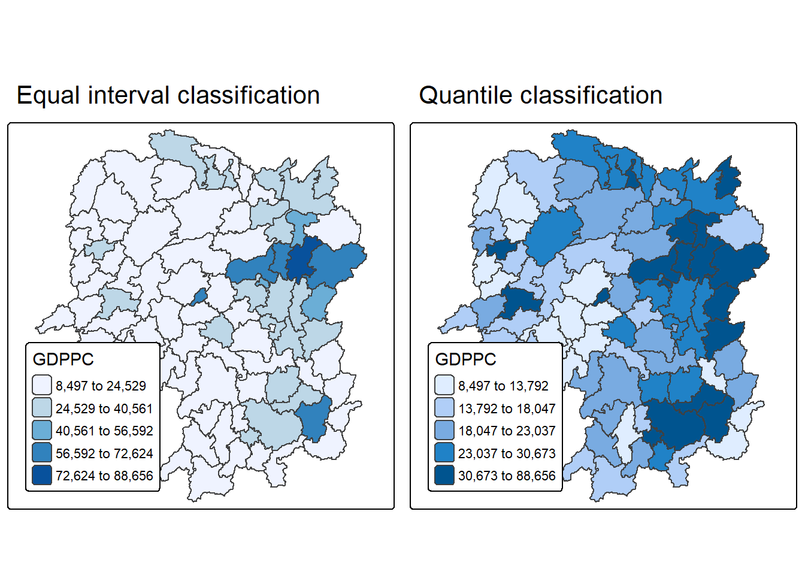
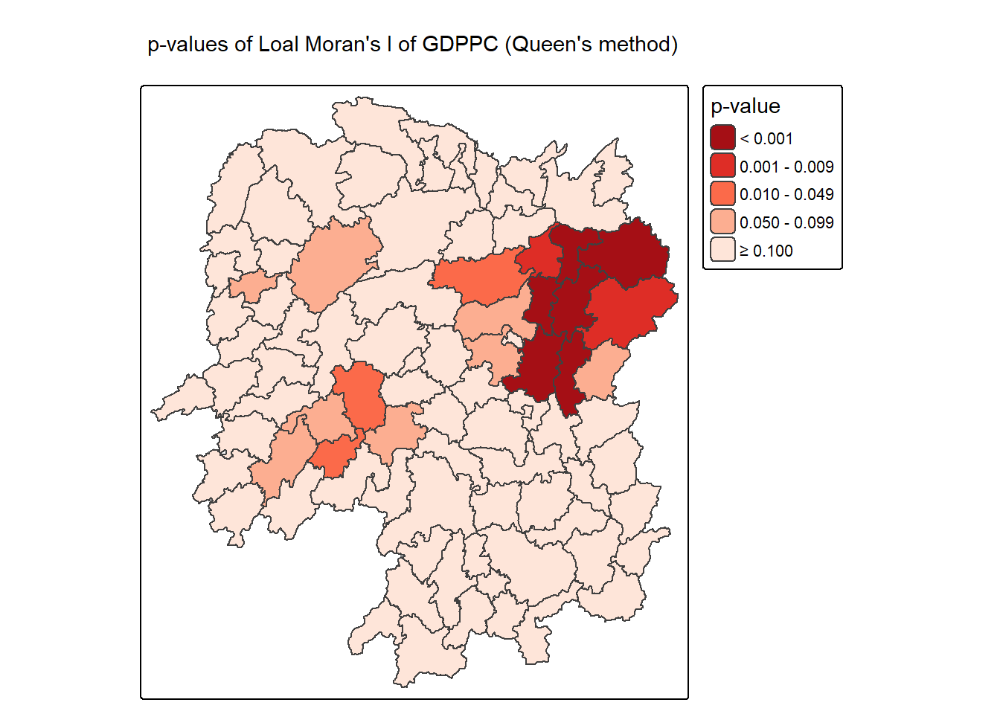
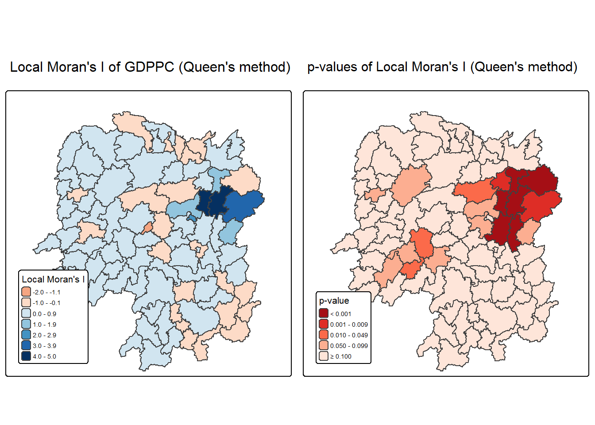
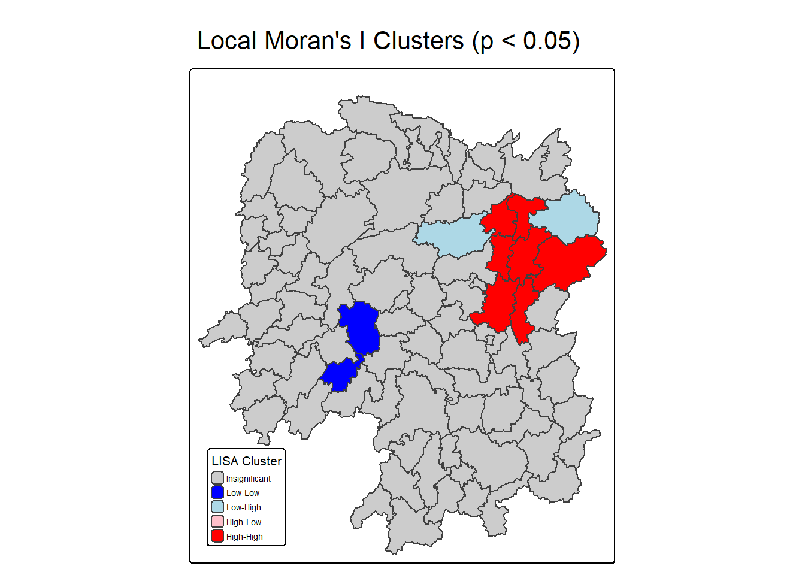
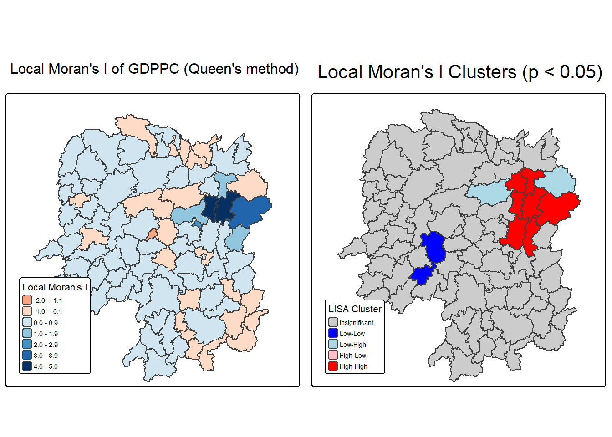
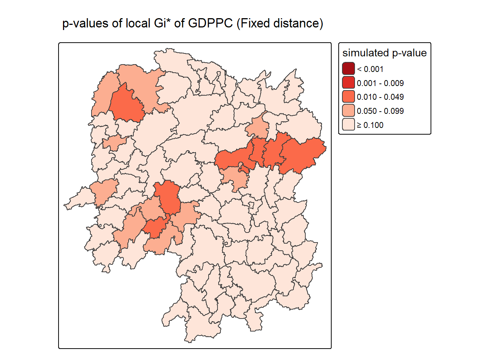
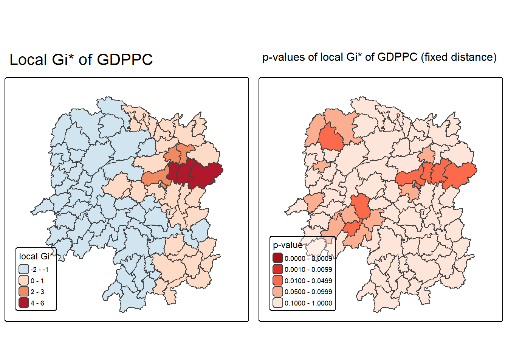
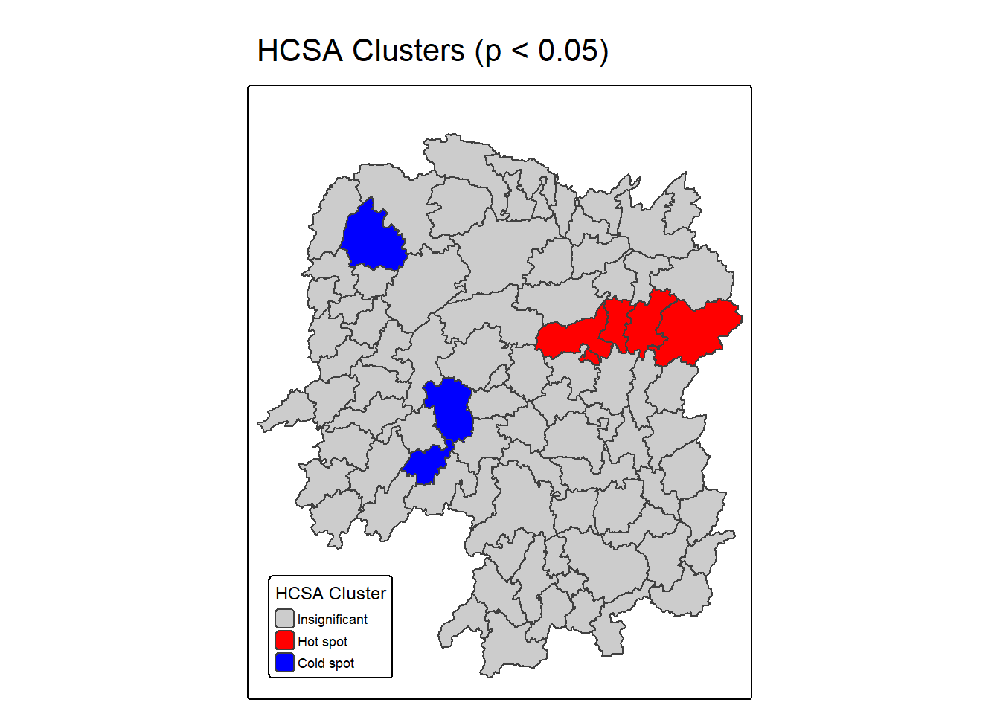
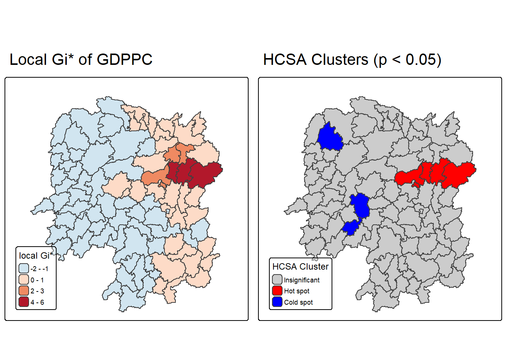

pacman::p_load(sf, sfdep, tmap, tidyverse)Local Measures of Spatial Autocorrelation
Overview
Local Measures of Spatial Autocorrelation (LMSA) focus on the relationships between each observation and its surroundings, rather than providing a single summary of these relationships across the map. In this sense, they are not summary statistics but scores that allow us to learn more about the spatial structure in our data. To simplify, they break things down to the individual location level. They show where clustering or outliers exist in the study area.
The general intuition behind the metrics however is similar to that of global ones. Some of them are even mathematically connected, where the global version can be decomposed into a collection of local ones. One such example are Local Indicators of Spatial Association (LISA). Beside LISA, Getis-Ord’s Gi-statistics will be introduce as an alternative LMSA statistics that present complementary information or allow us to obtain similar insights for geographically referenced data.
In this hands-on exercise, we will learn how to compute Local Measures of Spatial Autocorrelation (LMSA) by using sfdep package. By the end to this hands-on exercise, you will be able to:
import geospatial data using appropriate function(s) of sf package
import csv file using appropriate function of readr package,
perform relational join using appropriate join function of dplyr package,
compute Local Indicator of Spatial Association (LISA) statistics for detecting clusters and outliers by using appropriate functions sfdep package;
compute Getis-Ord’s Gi-statistics for detecting hot spot or/and cold spot area by using appropriate functions of sfdep package; and
to visualise the analysis output by using tmap package
The Study Area and Data
Two data sets will be used in this hands-on exercise, they are:
Hunan county boundary layer. This is a geospatial data set in ESRI shapefile format.
Hunan_2012.csv: This csv file contains selected Hunan’s local development indicators in 2012.
Installing and Loading the R packages
- sf Provides the core tools for handling spatial data
- tmap A package used for producing maps for visualisation
- tidyverse A collection of R packages designed for data science tasks such as data import, cleaning, transformation, and visualisation
- sfdep Provides modern tools for analyzing spatial dependence by building on the sf package. It includes functions for creating contiguity and distance-based neighbors, constructing spatial weights, and performing local measures of spatial autocorrelation such as LISA (Local Indicators of Spatial Association).
The code chunk below uses p_load() of pacman package to check if the packages are installed in the computer. If they are, then they will be launched into R.
Importing and Preparing Study Area
The following code chunk will be using the st_read() function of sf package to import the Hunan shapefile into our R object, hunan.
hunan <- st_read(dsn = "data/geospatial",
layer = "Hunan") %>%
st_transform(crs = 32650)Reading layer `Hunan' from data source
`C:\Users\zongy\OneDrive\Desktop\SMU\ISSS626 - Geospatial Analytics\zongyin-tan\ISSS626-Geospatial-zytan\Hands-on_Ex\Hands-on_Ex05b\data\geospatial'
using driver `ESRI Shapefile'
Simple feature collection with 88 features and 7 fields
Geometry type: POLYGON
Dimension: XY
Bounding box: xmin: 108.7831 ymin: 24.6342 xmax: 114.2544 ymax: 30.12812
Geodetic CRS: WGS 84hunan2012 <- read_csv("data/aspatial/Hunan_2012.csv")Rows: 88 Columns: 29
── Column specification ────────────────────────────────────────────────────────
Delimiter: ","
chr (2): County, City
dbl (27): avg_wage, deposite, FAI, Gov_Rev, Gov_Exp, GDP, GDPPC, GIO, Loan, ...
ℹ Use `spec()` to retrieve the full column specification for this data.
ℹ Specify the column types or set `show_col_types = FALSE` to quiet this message.Performing relational join
After the importing of the files into the R environment, we will proceed to join the files.
The code chunk below will be used to update the attribute table of hunan’s SpatialPolygonsDataFrame with the attribute fields of hunan2012 dataframe. This is performed by using left_join() of dplyr package.
hunan <- left_join(hunan,hunan2012) %>%
select(1:4, 7, 15)Joining with `by = join_by(County)`Visualising Regional Development Indicator
We will prepare a basemap and a choropleth map showing the distribution of GDPPC 2012 by using qtm() of tmap package.
equal <- tm_shape(hunan) +
tm_polygons(fill = "GDPPC",
fill.scale = tm_scale_intervals(
style = "equal",
n = 5,
values = "brewer.blues")) +
tm_borders(fiil_alpha = 0.5) +
tm_layout(legend.position = c("left", "bottom"),
main.title = "Equal interval classification")[tm_borders()] Argument `fiil_alpha` unknown.
[v3->v4] `tm_layout()`: use `tm_title()` instead of `tm_layout(main.title = )`quantile <- tm_shape(hunan) +
tm_polygons(fill = "GDPPC",
fill.scale = tm_scale_intervals(
style = "quantile",
n = 5)) +
tm_borders(fiil_alpha = 0.5) +
tm_layout(legend.position = c("left", "bottom"),
main.title = "Quantile classification")[tm_borders()] Argument `fiil_alpha` unknown.
[v3->v4] `tm_layout()`: use `tm_title()` instead of `tm_layout(main.title = )`tmap_arrange(equal,
quantile,
asp=1,
ncol=2)
Note
From the maps, we can visually identify possible outliers and clusters. In the equal interval map, only a few regions stand out in the darkest shade, suggesting potential high-value outliers compared to their neighbors. In the quantile classification map, we can see more balanced shading, which highlights areas where groups of high or low values may form clusters. But overall this is subjective which is why Local Measures of Spatial Autocorrelation (LMSA) are necessary. While the maps give us a rough idea, LMSA provides the evidence and precision needed to say which areas are truly clustered or stand out as outliers.
Local Indicators of Spatial Association(LISA)
Local Indicators of Spatial Association (LISA) are used to identify where clustering or outliers occur in a dataset. Unlike global measures such as Moran’s I, which only provide a single overall statistic for the entire study area, LISA gives results at the local level for each individual region or location. This means it can show us whether a particular area is part of a cluster of similar values or stands out as an outlier compared to its neighbors.
For example, a district with high values surrounded by other high values is a hot spot, while a district with low values surrounded by low values is a cold spot. On the other hand, a high-value area surrounded by low values would be a High-Low outlier and a low-value area surrounded by high values would be a Low-High outlier.
In practice, LISA helps us go beyond just knowing that clustering exists and it tells us the exact locations where clusters and outliers appear, making it especially valuable for identifying local hot spots, cold spots and anomalies.
Computing Contiguity Spatial Weights
Before we can compute the local spatial autocorrelation statistics like Global Measures of Spatial Autocorrelation (GMSA), we need to construct a spatial weights of the study area. The spatial weights is used to define the neighbourhood relationships between the geographical units (i.e. county) in the study area.
In the code chunk below, st_contiguity() of sfdep package is used to compute contiguity weight matrices for the study area. This function builds a neighbours list based on regions with contiguous boundaries. If you look at the documentation you will see that you can pass a “queen” argument that takes TRUE or FALSE as options. If you do not specify this argument the default is set to TRUE, that is, if you don’t specify queen = FALSE this function will return a list of first order neighbours using the Queen criteria.
Next, st_weights() is used to calculate polygon spatial weights from the nb list.
st_weights() provides three arguments, they are:
nb: A neighbor list object as created by st_neighbors().
style: Default “W” for row standardized weights. This value can also be “B”, “C”, “U”, “minmax”, and “S”. B is the basic binary coding, W is row standardised (sums over all links to n), C is globally standardised (sums over all links to n), U is equal to C divided by the number of neighbours (sums over all links to unity), while S is the variance-stabilizing coding scheme proposed by Tiefelsdorf et al. 1999, p. 167-168 (sums over all links to n).
allow_zero: If TRUE, assigns zero as lagged value to zone without neighbors.
wm_q <- hunan %>%
mutate(nb = st_contiguity(geometry),
wt = st_weights(
nb, style = "W"),
.before = 1) The following code chunk will be used to show the neighbour list.
summary(wm_q$nb)Neighbour list object:
Number of regions: 88
Number of nonzero links: 448
Percentage nonzero weights: 5.785124
Average number of links: 5.090909
Link number distribution:
1 2 3 4 5 6 7 8 9 11
2 2 12 16 24 14 11 4 2 1
2 least connected regions:
30 65 with 1 link
1 most connected region:
85 with 11 linksComputing local Moran’s I
To compute local Moran’s I, the local_moran() function of sfdep will be used. It computes Ii values, given a set of zi values and a listw object providing neighbour weighting information for the polygon associated with the zi values.
In Global Measures of Spatial Autocorrelation (GMSA), we explicitly constructed and passed a row-standardised weights matrix before running the analysis. For Local Moran’s I, we follow a similar approach by using the spatial weights (nb and wt) that had already been created in the earlier step and are now passed directly into the local_moran() function.
The code chunks below are used to compute local Moran’s I of GDPPC2012 at the county level.
lisa <- wm_q %>%
mutate(local_moran = local_moran(
GDPPC, nb, wt, nsim = 99),
.before = 1) %>%
unnest(local_moran)
Important
local_moran() function returns a matrix of values whose columns are:
Ii: the local Moran’s I statistics
E.Ii: the expectation of local moran statistic under the randomisation hypothesis
Var.Ii: the variance of local moran statistic under the randomisation hypothesis
Z.Ii:the standard deviate of local moran statistic
Pr(): the p-value of local moran statistic
glimpse(lisa)Rows: 88
Columns: 21
$ ii <dbl> -1.468468e-03, 2.587817e-02, -1.198765e-02, 1.022468e-03,…
$ eii <dbl> -9.832157e-04, 1.124315e-02, -7.526906e-03, -3.408388e-04…
$ var_ii <dbl> 6.645710e-04, 8.662434e-03, 1.310065e-01, 5.361172e-06, 1…
$ z_ii <dbl> -0.01882334, 0.15724372, -0.01232425, 0.58879437, 0.20975…
$ p_ii <dbl> 0.984982035, 0.875052774, 0.990166920, 0.555999220, 0.833…
$ p_ii_sim <dbl> 0.78, 0.98, 0.84, 0.50, 0.76, 0.86, 0.04, 0.16, 0.02, 0.2…
$ p_folded_sim <dbl> 0.39, 0.49, 0.42, 0.25, 0.38, 0.43, 0.02, 0.08, 0.01, 0.1…
$ skewness <dbl> -1.3624455, -0.6490267, 1.4330326, 1.4061443, 0.8165591, …
$ kurtosis <dbl> 1.89279185, 0.20250577, 2.76662431, 2.75215504, -0.086966…
$ mean <fct> Low-High, Low-Low, High-Low, High-High, High-High, High-L…
$ median <fct> High-High, High-High, High-High, High-High, High-High, Hi…
$ pysal <fct> Low-High, Low-Low, High-Low, High-High, High-High, High-L…
$ nb <nb> <2, 3, 4, 57, 85>, <1, 57, 58, 78, 85>, <1, 4, 5, 85>, <1,…
$ wt <list> <0.2, 0.2, 0.2, 0.2, 0.2>, <0.2, 0.2, 0.2, 0.2, 0.2>, <0…
$ NAME_2 <chr> "Changde", "Changde", "Changde", "Changde", "Changde", "C…
$ ID_3 <int> 21098, 21100, 21101, 21102, 21103, 21104, 21109, 21110, 2…
$ NAME_3 <chr> "Anxiang", "Hanshou", "Jinshi", "Li", "Linli", "Shimen", …
$ ENGTYPE_3 <chr> "County", "County", "County City", "County", "County", "C…
$ County <chr> "Anxiang", "Hanshou", "Jinshi", "Li", "Linli", "Shimen", …
$ GDPPC <dbl> 23667, 20981, 34592, 24473, 25554, 27137, 63118, 62202, 7…
$ geometry <POLYGON [m]> POLYGON ((22320.48 3301894,..., POLYGON ((35522.9…Mapping local Moran’s I values
Using choropleth mapping functions of tmap package, we can plot the local Moran’s I values by using the code chinks below.
tm_shape(lisa) +
tm_polygons(fill = "ii",
fill.scale = tm_scale_intervals(
style = "pretty",
n = 5,
values = "brewer.RdBu"),
fill.legend = tm_legend(
title = "Local Morans'I",
position = tm_pos_out())) +
tm_borders(fill_alpha = 0.5) +
tm_title("Loal Morans'I of GDPPC (Queen's method)")[scale] tm_polygons:() the data variable assigned to 'fill' contains positive and negative values, so midpoint is set to 0. Set 'midpoint = NA' in 'fill.scale = tm_scale_intervals(<HERE>)' to use all visual values (e.g. colors)[cols4all] color palettes: use palettes from the R package cols4all. Run
`cols4all::c4a_gui()` to explore them. The old palette name "brewer.RdBu" is
named "rd_bu" (in long format "brewer.rd_bu")
[plot mode] fit legend/component: Some legend items or map compoments do not
fit well, and are therefore rescaled.
ℹ Set the tmap option `component.autoscale = FALSE` to disable rescaling.
This plot shows us the magnitude and type of spatial pattern. The dark blue areas in the center-east clearly suggest clusters of high GDP per capita, while the orange patches indicate potential outliers. However, the values alone do not tell us if these patterns are meaningful or just random variation. So we will plot the p-values to highlight which of these clusters or outliers are statistically significant.
Mapping local Moran’s I p-values
The choropleth shows there is evidence for both positive and negative Ii values. However, it is useful to consider the p-values for each of these values, as consider above.
The code chunks below produce a choropleth map of Moran’s I p-values by using functions of tmap package.
tm_shape(lisa) +
tm_polygons(fill = "p_ii",
fill.scale = tm_scale_intervals(
breaks = c(-Inf, 0.001, 0.01, 0.05, 0.1, Inf),
values = "-brewer.Reds"),
fill.legend = tm_legend(
title = "p-value",
position = tm_pos_out())) +
tm_borders(fill_alpha = 0.5) +
tm_title("p-values of Loal Moran's I of GDPPC (Queen's method)")[cols4all] color palettes: use palettes from the R package cols4all. Run
`cols4all::c4a_gui()` to explore them. The old palette name "-brewer.Reds" is
named "reds" (in long format "brewer.reds")
[plot mode] fit legend/component: Some legend items or map compoments do not
fit well, and are therefore rescaled.
ℹ Set the tmap option `component.autoscale = FALSE` to disable rescaling.
Darker red regions (p-values < 0.01 and < 0.001) are places where we can be highly confident that the observed clustering or outlier pattern is real and not due to chance. Lighter shades mean weaker statistical evidence and very pale areas (p > 0.1) mean the local Moran’s I there is not statistically significant.
Mapping both local Moran’s I values and p-values
For effective interpretation, it is better to plot both the local Moran’s I values map and its corresponding p-values map next to each other.
The code chunk below will be used to create such visualisation.
ii.map <- tm_shape(lisa) +
tm_polygons(
fill = "ii",
fill.scale = tm_scale_intervals(
style = "pretty",
n = 5,
values = "brewer.RdBu"
),
fill.legend = tm_legend(
title = "Local Moran's I",
position = tm_pos_in("left", "bottom"),
text.size = 0.45, # smaller legend text
title.size= 0.65, # smaller legend title
frame = TRUE
)
) +
tm_borders() +
tm_layout(
legend.outside = FALSE,
inner.margins = c(0.02, 0.02, 0.08, 0.02) # extra bottom space for legend
) +
tm_title("Local Moran's I of GDPPC (Queen's method)")
p_ii.map <- tm_shape(lisa) +
tm_polygons(
fill = "p_ii",
fill.scale = tm_scale_intervals(
breaks = c(-Inf, 0.001, 0.01, 0.05, 0.10, Inf),
values = "-brewer.Reds" # darker = more significant
),
fill.legend = tm_legend(
title = "p-value",
position = tm_pos_in("left", "bottom"),
text.size = 0.45,
title.size= 0.65,
frame = TRUE
)
) +
tm_borders() +
tm_layout(
legend.outside = FALSE,
inner.margins = c(0.02, 0.02, 0.08, 0.02)
) +
tm_title("p-values of Local Moran's I (Queen's method)")
tmap_arrange(ii.map, p_ii.map, asp = 1, ncol = 2)[scale] tm_polygons:() the data variable assigned to 'fill' contains positive and negative values, so midpoint is set to 0. Set 'midpoint = NA' in 'fill.scale = tm_scale_intervals(<HERE>)' to use all visual values (e.g. colors)[cols4all] color palettes: use palettes from the R package cols4all. Run
`cols4all::c4a_gui()` to explore them. The old palette name "brewer.RdBu" is
named "rd_bu" (in long format "brewer.rd_bu")
[plot mode] fit legend/component: Some legend items or map compoments do not
fit well, and are therefore rescaled.
ℹ Set the tmap option `component.autoscale = FALSE` to disable rescaling.
[cols4all] color palettes: use palettes from the R package cols4all. Run
`cols4all::c4a_gui()` to explore them. The old palette name "-brewer.Reds" is
named "reds" (in long format "brewer.reds")
[plot mode] fit legend/component: Some legend items or map compoments do not
fit well, and are therefore rescaled.
ℹ Set the tmap option `component.autoscale = FALSE` to disable rescaling.
Looking at both maps together, we can conclude that the blue clusters in the center-east are not only strong in value but also statistically significant (dark red areas). This means they represent genuine hot spots of high GDP per capita.
On the other hand, some orange or light blue areas in the first map may look like outliers or weaker clusters, but since they do not appear significant in the second map, we should interpret them with caution as they may not represent meaningful patterns.
Preparing and Visualising LISA Map
Visualizing LISA helps us move from statistical outputs to clear, interpretable patterns on a map. Instead of only looking at numerical values or p-values, we can highlight where significant spatial clustering occurs. This allows us to easily spot hot spots (areas where high values are clustered together), cold spots (areas where low values cluster) and potential outliers.
Plotting Moran scatterplot
A Moran Scatterplot is a simple way to see how a place’s value compares with the values of its neighbors. On the x-axis, we plot the value of the variable for each location (GDP per capita) and on the y-axis we plot the average value of that location’s neighbors (its spatial lag). The line that runs through the points shows whether similar values are clustering together. If the slope is positive, it means places with high values tend to be near other high values (hot spots) and places with low values tend to be near other low values (cold spots). If the slope is negative, it suggests an opposite relationship. This plot helps us easily spot clusters as well as unusual locations like a high-value area surrounded by low-value areas (high-low outlier).
In the code chunk below, st_lag() of sfdep package is used to calculates the spatial lag of GDPPC given a neighbor (i.e. nb) and weights list (i.e. wt).
lisa <- lisa %>%
mutate(lag_GDPPC = st_lag(
GDPPC, nb, wt),
.before = 1) %>%
unnest(lag_GDPPC)Then, the code chunk below is used to plot the Moran Scatterplot of GDPPC against its spatial lag version as shown in the code cunk below.
ggplot(data = lisa,
aes(x = GDPPC,
y = lag_GDPPC)) +
geom_point() +
geom_smooth(method = "lm",
se = FALSE,
color = "red") +
labs(x = "GDPPC",
y = "Spatial Lag of GDPPC",
title = "Moran Scatterplot") +
theme_minimal()`geom_smooth()` using formula = 'y ~ x'
The Moran Scatterplot above is not very intuitive. To support effective visual communication, the code chunk below is used.
ggplot(data = lisa,
aes(x = GDPPC,
y = lag_GDPPC,
color = mean)) +
geom_point(size = 2) +
geom_smooth(method = "lm",
se = FALSE,
color = "black") +
geom_hline(yintercept=mean(lisa$lag_GDPPC), lty=2) +
geom_vline(xintercept=mean(lisa$GDPPC), lty=2) +
scale_color_manual(
values = c("High-High" = "red",
"Low-Low" = "blue",
"Low-High" = "lightblue",
"High-Low" = "pink")) +
labs(x = "GDPPC",
y = "Spatial Lag of GDPPC",
title = "Moran Scatterplot with LISA Quadrants") +
theme_minimal()`geom_smooth()` using formula = 'y ~ x'
Note
Notice that the plot is split in 4 quadrants. The top right corner belongs to areas that have high GDPPC and are surrounded by other areas that have the average level of GDPPC. This are the high-high locations in the lesson slide.
Plotting Moran scatterplot with standardised variable
First we will use scale() to centers and scales the variable. Here centering is done by subtracting the mean (omitting NAs) the corresponding columns, and scaling is done by dividing the (centered) variable by their standard deviations.
lisa <- lisa %>%
mutate(z_GDPPC = scale(GDPPC),
z_lag_GDPPC = scale(lag_GDPPC),
.before = 1)The as.vector() added to the end is to make sure that the data type we get out of this is a vector, that map neatly into out dataframe.
Now, we are ready to plot the Moran scatterplot again by using the code chunk below.
ggplot(data = lisa,
aes(x = z_GDPPC,
y = z_lag_GDPPC,
color = mean)) +
geom_point(size = 2) +
geom_smooth(method = "lm",
se = FALSE,
color = "black") +
geom_hline(yintercept=mean(lisa$z_lag_GDPPC), lty=2) +
geom_vline(xintercept=mean(lisa$z_GDPPC), lty=2) +
scale_color_manual(
values = c("High-High" = "red",
"Low-Low" = "blue",
"Low-High" = "lightblue",
"High-Low" = "pink")) +
labs(x = "Standardised GDPPC",
y = "Standardised Spatial Lag of GDPPC",
title = "Standardised Moran Scatterplot with LISA Quadrants") +
theme_minimal()`geom_smooth()` using formula = 'y ~ x'
Preparing LISA map classes
The code chunks below show the steps to prepare a LISA cluster map.
Next, derives the spatially lagged variable of interest (i.e. GDPPC) and centers the spatially lagged variable around its mean.
This is follow by centering the local Moran’s around the mean.
Next, we will set a statistical significance level for the local Moran.
signif <- 0.05Plotting and visualising LISA map
By default, the LISA classes are stored in mean, median and pysal fields of lisa sf data frame. To prepare the LISA map, we will derive a new field called LISA-cluster from either one of these three field by using the code chunk below.
lisa <- lisa %>%
mutate(
LISA_cluster = ifelse(
p_ii < 0.05,
as.character(mean),
"Insignificant"),
LISA_cluster = factor(
LISA_cluster,
levels = c("Insignificant", "Low-Low", "Low-High", "High-Low", "High-High")
)
)
Note
Notice that a new class called Insignificant has been added for records whereby p_ii > 0.05. We create the Insignificant class to separate areas where the results of Local Moran’s I are not statistically meaningful. This prevents us from mistakenly interpreting random noise as meaningful spatial patterns, and it makes the final LISA map clearer.
Now, we can plot the LISA map by using the code chunk below.
lisa_map <- tm_shape(lisa) +
tm_polygons(
fill = "LISA_cluster",
fill.scale = tm_scale_categorical(
values = c(
"grey80", # Insignificant
"blue", # Low-Low
"lightblue", # Low-High
"pink", # High-Low
"red" # High-High
)
),
fill.legend = tm_legend(
title = "LISA Cluster",
position = tm_pos_in("left", "bottom"),
text.size = 0.45,
title.size= 0.65,
frame = TRUE
)
) +
tm_borders() +
tm_layout(
legend.outside = FALSE,
inner.margins = c(0.02, 0.02, 0.06, 0.02)
) +
tm_title("Local Moran's I Clusters (p < 0.05)")
lisa_map
For effective interpretation, it is better to plot both the local Moran’s I values map and its corresponding p-values map next to each other.
The code chunk below will be used to create such visualisation.
We can also include the local Moran’s I map and p-value map as shown below for easy comparison.
tmap_arrange(ii.map, lisa_map, asp=1, ncol=2)[scale] tm_polygons:() the data variable assigned to 'fill' contains positive and negative values, so midpoint is set to 0. Set 'midpoint = NA' in 'fill.scale = tm_scale_intervals(<HERE>)' to use all visual values (e.g. colors)[cols4all] color palettes: use palettes from the R package cols4all. Run
`cols4all::c4a_gui()` to explore them. The old palette name "brewer.RdBu" is
named "rd_bu" (in long format "brewer.rd_bu")
[plot mode] fit legend/component: Some legend items or map compoments do not
fit well, and are therefore rescaled.
ℹ Set the tmap option `component.autoscale = FALSE` to disable rescaling.
From the LISA map(right), most counties are grey, meaning their local association is not statistically significant at the 5% level. The clear signal is a High–High (hot-spot) cluster in the east–central part of the province. These counties have high GDP per capita and are surrounded by similarly high counties, indicating a significant local concentration of prosperity. In contrast, there is a Low–Low (cold-spot) area (dark blue) in the south-west, where a low-income county is embedded in low-income neighbors.
A few spatial outliers also appear which are the Low–High counties (light blue) on the northern/eastern fringe of the hot-spot which are places with relatively low GDPPC but neighbored by high-GDPPC counties.
Overall, the dominant statistically significant pattern is the east–central cluster, with one small LL pocket and a handful of LH outliers. The rest of the map shows no evidence of significant local autocorrelation.
Hot Spots and Cold Spots Analysis (HCSA)
Hot spots and cold spots analysis is a technique used in spatial statistics to identify statistically significant clusters of high values (hot spots) and low values (cold spots) of a geographically referenced attribute (i.e. GDPPC). These analyses help visualize and understand spatial patterns, revealing areas where data points are clustered more densely than would be expected by random chance.
Figure below shows the hot spots and cold spots of GDP per capita of Hunan Provice, People Republic of China.
The term hot spots refer to areas where high values are concentrated and surrounded by other high values. It has been used generically across disciplines to describe a region or value that is higher relative to its surroundings (Lepers et al 2005, Aben et al 2012, Isobe et al 2015). For example, a hot spot analysis might reveal clusters of high GDP per capita in a province, indicating areas with significantly higher GDP per capita than other parts of the province.
On the other hand, the term cold spots refer to areas where low values are concentrated and surrounded by other low values. An example could be clusters of low GDP per capita, indicating areas where GDP per capita is consistently low.
HCSA uses statistical methods, like the Getis-Ord Gi* statistic, to determine if the observed clustering is statistically significant or could have occurred randomly.
The analysis consists of four steps:
Deriving spatial weight matrix
Computing Gi* statistics
Mapping Gi* statistics
Communicating the analysis results
Deriving distance weight matrix
Whist the spatial autocorrelation considered units which shared borders, for Getis-Ord Gi* statistics, we are defining neighbours based on distance.
There are two type of distance-based proximity matrix, they are:
fixed distance weight matrix
adaptive distance weight matrix
inverse distance weights
Computing fixed distance weights
In this section, you will learn how to compute fixed distance weight matrix by using st_dist_band() and st_weights() of sfdep package.
Firstly, we need to determine the upper limit for distance band by using the steps below:
ct <- critical_threshold(st_geometry(hunan))Warning in spdep::knn2nb(spdep::knearneigh(pnts, k)): neighbour object has 25
sub-graphsct[1] 60799.91The summary report shows that the largest first nearest neighbour distance is 60.80 km, so using this as the upper threshold gives certainty that all units will have at least one neighbour.
Using the critical threshold value computed above, code chunk below is used to compute the fixed distance weight.
hunan_fdw <- hunan %>%
mutate(nb = include_self(
st_dist_band(
st_geometry(geometry),
upper = ct)),
wt = st_weights(nb,
style = "W"),
.before = 1) ! Polygon provided. Using point on surface.
Note
Noted that for Gi* include_self() must be used to endure that  .
.
Computing adaptive distance weights
One of the characteristics of fixed distance weight matrix is that more densely settled areas (usually the urban areas) tend to have more neighbours and the less densely settled areas (usually the rural counties) tend to have lesser neighbours. Having many neighbours smooth the neighbour relationship across more neighbours.
It is possible to control the numbers of neighbours directly using k-nearest neighbours, either accepting asymmetric neighbours or imposing symmetry as shown in the code chunk below.
In this section, you will learn how to compute fixed distance weight matrix by using st_dist_band() and st_weights() of sfdep package.
hunan_adw <- hunan %>%
mutate(nb = include_self(
st_knn(
st_geometry(geometry),
k = 6)),
wt = st_weights(
nb, style = "W"),
.before = 1)! Polygon provided. Using point on surface.Computing local Gi*
Local Gi* (pronounced “G-i-star”) is a method used in spatial analysis to find hot spots and cold spots in data. In simple terms, it looks at each location and asks if the values around the place is unusually high or unusually low compared to the overall area.
If the nearby values are much higher than expected, that area is marked as a hot spot. If they are much lower, it becomes a cold spot. The method gives each location a z-score (showing how extreme the value is) and a p-value (showing if it’s statistically significant, not just random).
Simply said, local Gi* helps us highlight areas where high or low values really cluster together, rather than being spread randomly.
In this sub-section, you will gain hands-on experience on performing Gi* analysis by using local_gstar_perm() of sfdep package.
HCSA_fdw <- hunan_fdw %>%
mutate(
gistar = local_gstar_perm(
GDPPC, nb, wt, nsim = 99),
.before = 1) %>%
unnest(gistar)Preparing and Visualising HCSA Map
Mapping Gi* with fix distance weights
In the code chunk below, thematic mapping functions of tmaps are used to prepare a choropleth map showing the distribution of Gi* values.
tm_shape(HCSA_fdw) +
tm_polygons(fill = "gi_star",
fill.scale = tm_scale_intervals(
style = "pretty",
n = 6,
values = "brewer.rd_bu"),
fill.legend = tm_legend(
title = "Gi*",
position = tm_pos_out())) +
tm_borders(fill_alpha = 0.5) +
tm_title("Gi* of GDPPC (Fixed Bandwidth d = 60799.91m)")[scale] tm_polygons:() the data variable assigned to 'fill' contains positive and negative values, so midpoint is set to 0. Set 'midpoint = NA' in 'fill.scale = tm_scale_intervals(<HERE>)' to use all visual values (e.g. colors)[plot mode] fit legend/component: Some legend items or map compoments do not
fit well, and are therefore rescaled.
ℹ Set the tmap option `component.autoscale = FALSE` to disable rescaling.
Mapping local Gi* p-values
The choropleth shows there is evidence for both positive and negative Ii values. However, it is useful to consider the p-values for each of these values, as consider above.
The code chunk below plots a choropleth map of p-values of Gi* by using functions of tmap package.
tm_shape(HCSA_fdw) +
tm_polygons(fill = "p_sim",
fill.scale = tm_scale_intervals(
breaks = c(-Inf, 0.001, 0.01, 0.05, 0.1, Inf),
values = "-brewer.Reds"),
fill.legend = tm_legend(
title = "simulated p-value",
position = tm_pos_out())) +
tm_borders(fill_alpha = 0.5) +
tm_title("p-values of local Gi* of GDPPC (Fixed distance)")[cols4all] color palettes: use palettes from the R package cols4all. Run
`cols4all::c4a_gui()` to explore them. The old palette name "-brewer.Reds" is
named "reds" (in long format "brewer.reds")
[plot mode] fit legend/component: Some legend items or map compoments do not
fit well, and are therefore rescaled.
ℹ Set the tmap option `component.autoscale = FALSE` to disable rescaling.
Mapping both Gi* values and p-values
For effective interpretation, it is better to plot both the Gi* values map and its corresponding p-values map next to each other.
The code chunk below will be used to create such visualisation.
Gi_star_map <- tm_shape(HCSA_fdw) +
tm_polygons(
fill = "gi_star",
fill.scale = tm_scale_intervals(
style = "pretty",
n = 5,
values = "-brewer.rd_bu"
),
fill.legend = tm_legend(
title = "local Gi*",
position = tm_pos_in("left", "bottom"),
scale = 0.60, # shrink legend
text.size = 0.55, # smaller labels
title.size = 0.75, # smaller title
bg.alpha = 0.35 # subtle background
)
) +
tm_borders(fill_alpha = 0.5) +
tm_layout(inner.margins = c(0.04, 0.02, 0.09, 0.02)) +
tm_title("Local Gi* of GDPPC")
p_values_map <- tm_shape(HCSA_fdw) +
tm_polygons(
fill = "p_sim",
fill.scale = tm_scale_intervals(
breaks = c(0, 0.001, 0.01, 0.05, 0.1, 1),
values = "-brewer.reds"
),
fill.legend = tm_legend(
title = "p-value",
position = tm_pos_in("left", "bottom"),
scale = 0.60,
text.size = 0.55,
title.size = 0.75,
bg.alpha = 0.35
)
) +
tm_borders(fill_alpha = 0.5) +
tm_layout(inner.margins = c(0.04, 0.02, 0.09, 0.02)) +
tm_title("p-values of local Gi* of GDPPC (fixed distance)")
tmap_arrange(Gi_star_map, p_values_map, asp=1, ncol=2)[scale] tm_polygons:() the data variable assigned to 'fill' contains positive and negative values, so midpoint is set to 0. Set 'midpoint = NA' in 'fill.scale = tm_scale_intervals(<HERE>)' to use all visual values (e.g. colors)[plot mode] fit legend/component: Some legend items or map compoments do not
fit well, and are therefore rescaled.
ℹ Set the tmap option `component.autoscale = FALSE` to disable rescaling.
Plotting and visualising HCSA Map
By default, the HCSA classes are stored in cluster field of HCSA_fdw sf data frame. To prepare the HSCA map, we will derive a new field called HCSA_cluster from cluster field by using the code chunk below.
HCSA_fdw <- HCSA_fdw %>%
mutate(HCSA_cluster = case_when(
p_sim > 0.05 ~ "Insignificant",
p_sim <= 0.05 & cluster == "High" ~ "Hot spot",
p_sim <= 0.05 & cluster == "Low" ~ "Cold spot",
TRUE ~ "Other"),
HCSA_cluster = factor(
HCSA_cluster,
levels = c("Insignificant", "Hot spot", "Cold spot")
),
.before = 1
)Now, we can plot the HCSA map by using the code chunk below.
HCSA_map <- tm_shape(HCSA_fdw) +
tm_polygons(
fill = "HCSA_cluster",
fill.scale = tm_scale_categorical(
values = c("grey80", "red", "blue") # Insignificant, Hot, Cold
),
fill.legend = tm_legend(
title = "HCSA Cluster",
position = tm_pos_in("left", "bottom"),
scale = 0.60,
text.size = 0.55,
title.size = 0.75,
bg.alpha = 0.35
)
) +
tm_borders() +
tm_layout(inner.margins = c(0.04, 0.02, 0.09, 0.02)) +
tm_title("HCSA Clusters (p < 0.05)")
HCSA_map
For effective interpretation, it is better to plot both the local Gi* values map and its corresponding HCSA map next to each other.
The code chunk below will be used to create such visualisation.
tmap_arrange(Gi_star_map, HCSA_map, asp=1, ncol=2)[scale] tm_polygons:() the data variable assigned to 'fill' contains positive and negative values, so midpoint is set to 0. Set 'midpoint = NA' in 'fill.scale = tm_scale_intervals(<HERE>)' to use all visual values (e.g. colors)
From the HCSA map (right), most counties are shaded grey, which means they are not statistically significant at the 5% level. The most prominent pattern is the hot spots (red areas) located in the east–central part of the province. These counties have high GDP per capita and are surrounded by other high-value neighbors, highlighting a strong local concentration of prosperity.
In contrast, several cold spots (blue areas) appear in the western and southwestern parts of the province. These are areas of low GDP per capita that are clustered together, indicating regions of persistent lower economic activity.
Compared to the surrounding grey areas, the hot spots and cold spots stand out as the only statistically meaningful clusters. This means that, while much of the province shows no strong local clustering, there are clear pockets of wealth (hot spots) and poverty (cold spots) that drive the local spatial structure.
Overall, the dominant statistically significant patterns are the hot spots in the east–central counties and the cold spots in the western counties, which together reveal localized inequality in economic distribution.